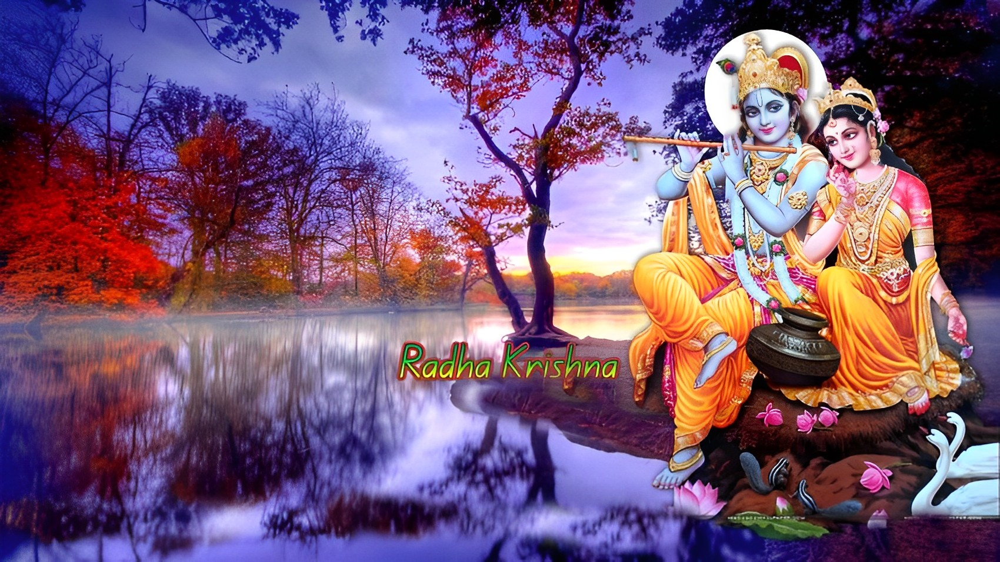

Radha Rani
"Radhe Radhe Radhe Radhe Radhe Govinda,
Radhe Radhe Govinda Vrindavana Chanda"

-- ॐ श्री राधे राधे श्री राधे राधे
Introduction
Radha, a beloved figure in Hinduism, symbolizes divine love and devotion. Her deep spiritual connection with Lord Krishna exemplifies the profound bond between the soul and the Divine. Radha's selfless love and unwavering faith inspire devotees to seek union with the divine through pure devotion and self-surrender.
Radha Rani said
“Whatever, let it come, and whatever goes, let it go. Embrace with all your heart.”
Radha, a central figure in Hindu mythology, holds a unique and revered place as the divine consort of Lord Krishna. Her story, often intertwined with themes of love, devotion, and spiritual longing, has captivated the hearts of devotees and poets for centuries.
Radha is often depicted as the embodiment of pure and selfless love for Krishna, and their relationship is symbolic of the eternal bond between the individual soul (jiva) and the divine (paramatma). Her love for Krishna is celebrated as the highest form of devotion, known as "bhakti," where the devotee's love and surrender are considered the most powerful means of attaining spiritual union with the divine.
Although Radha is not mentioned in the original Hindu scriptures like the Vedas or the Puranas, her narrative has been elaborated upon in various texts, especially in the Bhagavata Purana and the Gita Govinda. In these texts, Radha is portrayed as a cowherd maiden from Vrindavan, a village associated with Krishna's early life. Her beauty, grace, and unwavering devotion to Krishna make her an exemplar of divine love.
The stories of Radha and Krishna are rich with metaphors and allegorical meanings. Radha's yearning for Krishna represents the soul's yearning for union with the divine. Her love for Krishna is often described as both mystical and transcendental, surpassing the limitations of human understanding.
Radha's emotions and interactions with Krishna are beautifully depicted in Jayadeva's Gita Govinda, a poetic work that narrates their love story in exquisite detail. Radha's emotions, from longing and separation to ecstatic union, are portrayed through various poetic descriptions, creating a tapestry of spiritual and emotional experiences.
The divine love between Radha and Krishna has also inspired a rich tradition of devotional music, dance, and art. In various regions of India, especially in the state of West Bengal, Radha and Krishna's love is celebrated through colorful festivals like "Holi," where devotees reenact their playful and joyous interactions.
Radha's significance extends beyond her relationship with Krishna. In some interpretations, she is considered an incarnation of Goddess Lakshmi, the embodiment of wealth and prosperity. In others, she represents the ultimate devotee, showing the path of unwavering devotion to God.
Despite her absence in mainstream Hindu scriptures, Radha's influence on the devotional landscape is profound. Her character serves as a divine muse, guiding individuals on their spiritual journey towards self-realization and union with the divine. Radha's story exemplifies the power of love, devotion, and the deep yearning for a higher truth that transcends the material world.
In summary, Radha is a revered figure in Hindu mythology, symbolizing the epitome of selfless love and devotion to Lord Krishna. Her story, characterized by its depth of emotion and spiritual significance, continues to inspire generations of devotees and artists, illustrating the transformative power of love and the eternal connection between the soul and the divine.